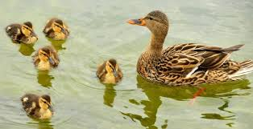
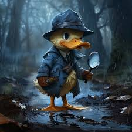

Whats a ducks favorite arcade game? Quack-a-mole
Why did the duck get a second job? it had to many bills
Whats a ducks favorite ballet? The Nutquacker
What do you call a duck that steals things? a robber ducky
Why do ducks fly south for the winter? its too far to waddle
Why do ducks lay eggs? it would break it if they drop them
Where do sick ducks go? The ducktor
I am duck detective, and I am Quacking the case!
What is storytime called when you read to ducklings? Ducktales
A duck walks into a pharmacy and buys a tube of chapstick. The cashier asks, "Cash or charge?" The duck replies, "Just put it on my bill".
What time does a duck wake up? At the quack of dawn.
What do you call a crate full of ducks? A box of quackers.
Two ducks walked into a building You'd think the second one would have seen it.
What do you call a duck that loves fireworks? A firequacker.
these are great jokes



image from rawpixel creator unknown

image from collections get archive author unknown
other photos from unkown author unknown